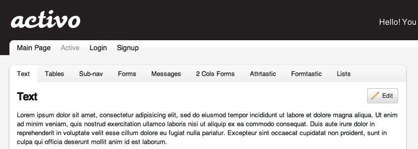
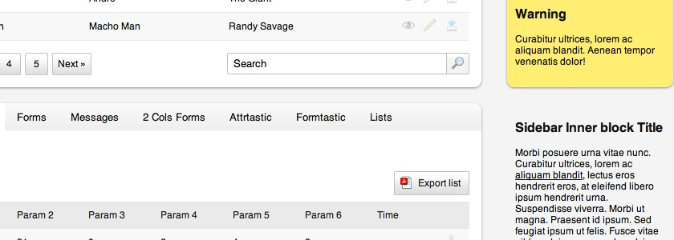
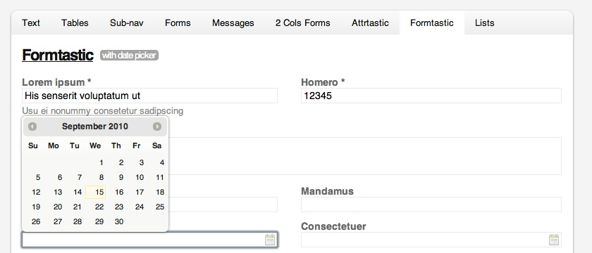
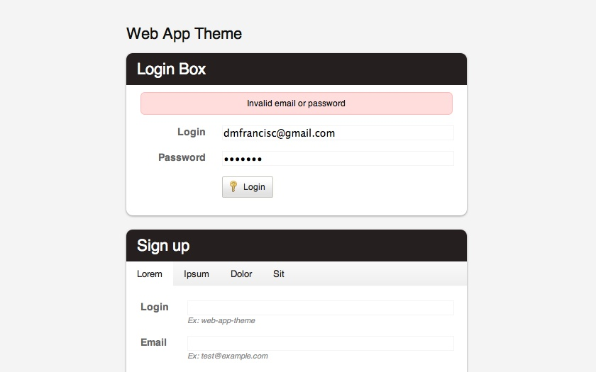

Activo was originally developed as a theme for the web-app-theme plugin. It was extended and now includes two extra stylesheets - one for formtastic and the other for attrtastic. It also comes with some css for the jQuery library, including the datePicker plugin. You can use only the ones you need. Try the live demo here.




* Web App Theme is a Rails plugin that generates a complete web application layout.
* Formtastic makes it easier to create HTML forms in your Rails applications.
* Attrtastic is similar in usage to formtastic and allows to easily display AR record information. It helps in the creation of show and index pages.
Contents
stylesheets
- base.css: This is the original web-app-theme main stylesheet.
- jquery.tipsy.css: Stylesheet for the tooltips generated by the jQuery tipsy plugin.
- activo
- activo.sass : Stylesheet of the theme (which needs to be compiled to the activo.css file if changes are made).
- activo-ie.sass: Stylesheet with some hacks to improve appearance in Internet Explorer.
- activo.css : Compiled version of activo.sass.
- activo-ie.css : Compiled version of activo-ie.sass.
- activo-attrtastic
- attrtastic_changes.css: Stylesheet of the theme for the attrtastic plugin.
- activo-formtastic
- formtastic_changes.css: Stylesheet of the theme for the formtastic plugin.
Contact information
Please email me at .
You can also contact me via skype.
Credits
Icons by Yusuke Kamiyamane (Fugue icons) and Evan Brooks (Token icon set).
Buttons by Particletree - Rediscovering the Button Element.